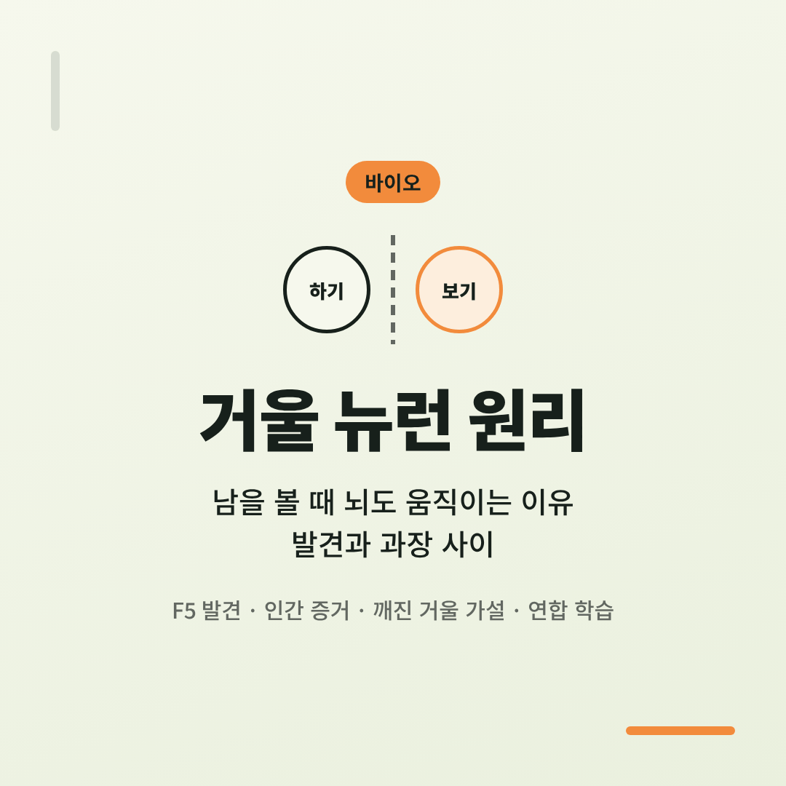
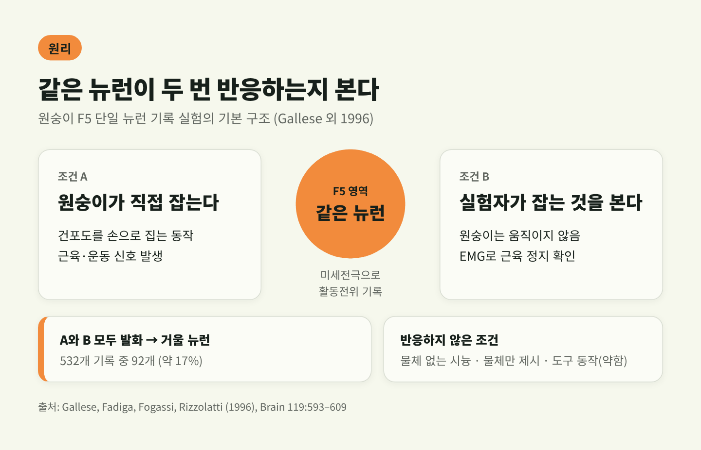
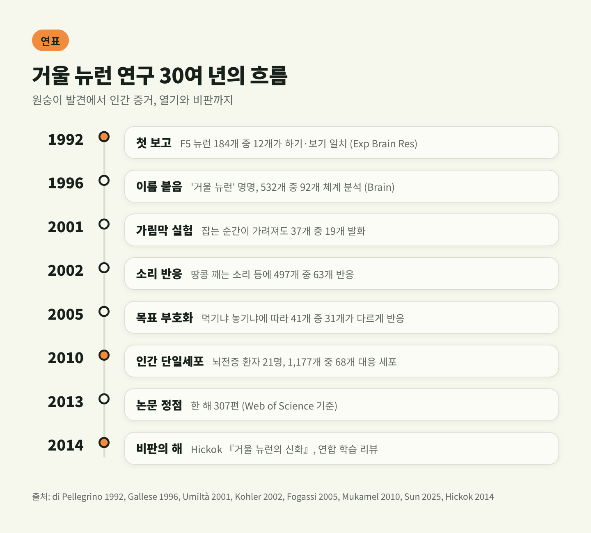
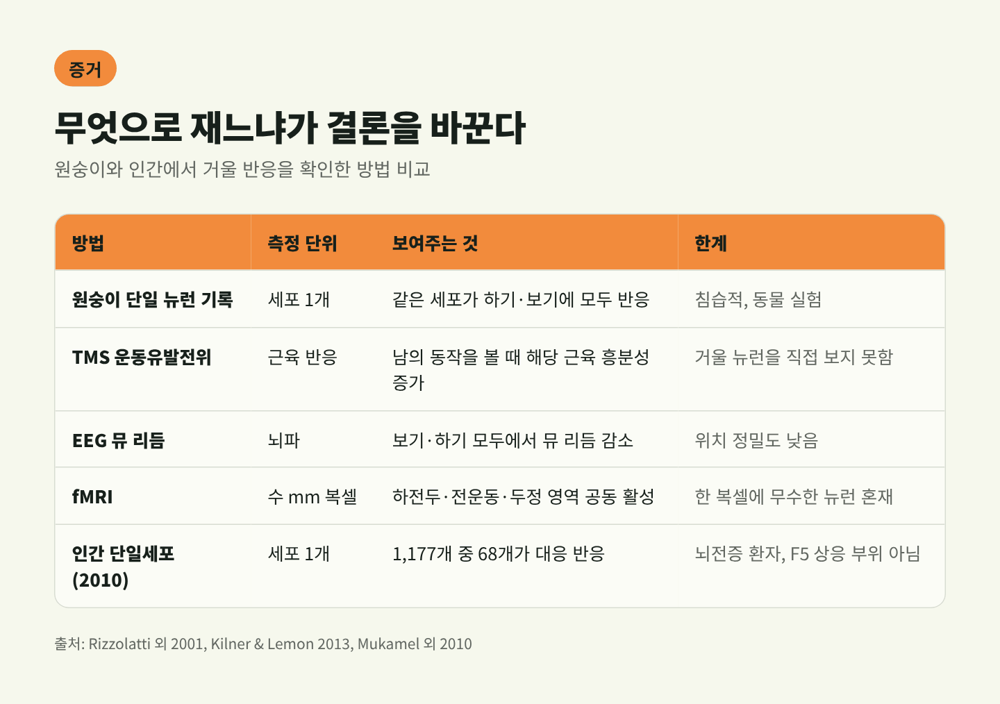
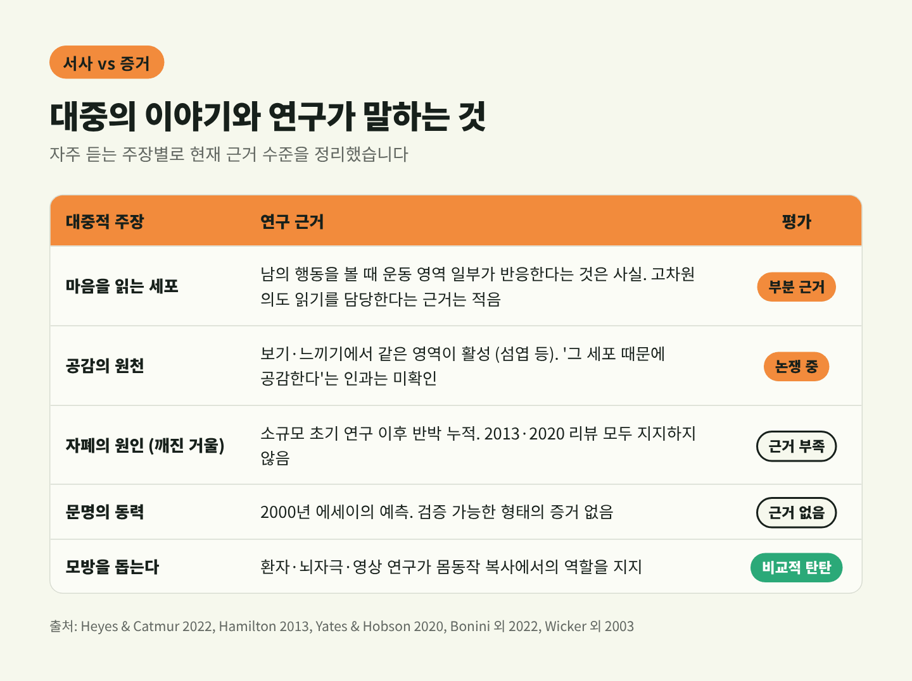
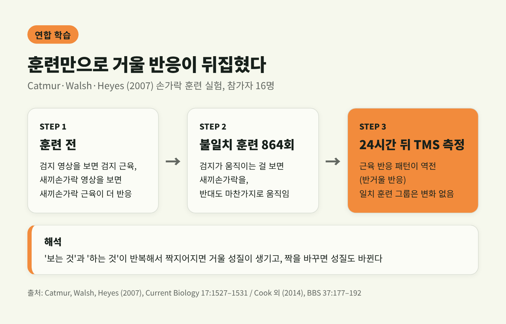
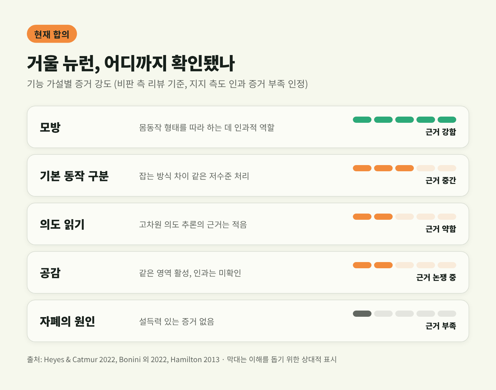

거울 뉴런 원리 — 남을 볼 때 뇌도 움직이는 이유, 발견과 과장 사이

이번 글에서는 거울 뉴런의 원리를 정리해 보겠습니다. 원숭이 뇌에서 처음 발견된 과정부터 인간에게서 찾은 증거, 그리고 '공감 세포'라는 대중적 이미지가 어디까지 맞는지를 차례로 살펴봅니다.
먼저 세 줄로 요약하면 이렇습니다.
- 거울 뉴런은 내가 어떤 동작을 할 때와 남이 같은 동작을 하는 것을 볼 때 모두 활동하는 신경세포입니다. 1992년 원숭이 전운동피질 F5 영역에서 처음 보고됐습니다.
- 인간에게도 비슷한 반응을 보이는 세포가 있다는 직접 증거는 2010년에야 나왔고, 그마저도 원숭이와 다른 부위에서 확인됐습니다.
- 모방에 관여한다는 근거는 탄탄한 편입니다. 반면 공감·마음 읽기·자폐를 한 번에 설명한다는 주장은 근거가 크게 부족하다는 것이 현재의 대체적인 평가입니다.
■ 파르마 연구실에서 일어난 일
이야기는 이탈리아 파르마 대학에서 시작됩니다. 자코모 리촐라티가 이끄는 연구팀은 1980~90년대 마카크원숭이의 뇌에서 F5라는 영역을 연구하고 있었습니다. F5는 이마엽 아래쪽 전운동피질에 있는 부위로, 손과 입으로 물체를 잡는 동작에 관여합니다.
연구팀의 원래 목표는 단순했습니다. 물체를 '볼 때' 반응하는 세포와 물체를 '잡으려 손을 뻗을 때' 반응하는 세포를 구분하는 것이었습니다. 그런데 원숭이가 직접 잡을 때 발화하던 일부 세포가, 실험자가 실험을 정리하려고 물체를 집는 모습을 원숭이가 보기만 할 때도 발화했습니다.
대중 매체에는 대학원생이 아이스크림콘을 입에 가져가자 원숭이의 세포가 반응했다는 일화가 자주 등장합니다. 리촐라티는 2006년 뉴욕타임스 인터뷰에서 "우리가 보고 있는 것을 믿기까지 몇 년이 걸렸다"고 말했습니다. 다만 이 장면은 논문에 기록된 실험이 아니라 인터뷰로 전해진 일화라는 점은 구분해 둘 필요가 있습니다.
기록으로 확인되는 것은 이렇습니다. 첫 보고는 1992년 『Experimental Brain Research』에 실린 디 펠레그리노 등의 논문입니다. F5 뉴런 184개를 기록했고, 그중 직접 하는 동작과 지켜본 동작이 일치하는 세포는 12개였습니다. '거울 뉴런'이라는 이름과 체계적인 분석은 1996년 갈레세 등이 『Brain』에 발표한 논문에서 나왔습니다.
■ 한 개의 뉴런을 엿듣는 방법
이 세포의 작동 원리를 이해하려면 먼저 '단일 뉴런 기록'이라는 방법을 알아야 합니다. 아주 가는 텅스텐 전극을 피질에 넣고, 세포 하나가 내는 전기 신호(활동전위)를 세포 바깥에서 받아 적는 방식입니다.
실험의 논리는 간단합니다. 같은 세포를 두 조건에서 비교합니다. 원숭이가 직접 건포도를 집을 때, 그리고 실험자가 건포도를 집는 것을 원숭이가 지켜볼 때입니다. 두 조건 모두에서 발화하면 거울 뉴런으로 분류합니다.

1996년 연구는 원숭이 두 마리의 F5에서 532개 뉴런을 기록했고, 92개(약 17%)가 거울 뉴런이었습니다. 관찰하는 동안 원숭이가 몰래 손을 움직인 것은 아닌지 근전도(EMG)로 확인했습니다. 흥미로운 것은 반응하지 '않은' 조건입니다. 물체 없이 잡는 시늉만 할 때, 물체만 놓여 있을 때는 반응이 없었습니다. 집게 같은 도구로 잡는 동작에도 대체로 약하게 반응했습니다. 즉 이 세포들은 손의 움직임 자체보다 '손으로 무언가를 잡는다'는 목표가 있는 동작에 맞춰져 있었습니다.
후속 연구는 이 특성을 넓혀 갔습니다. 2001년에는 잡는 순간이 가림막에 가려도 검사한 세포 37개 중 19개가 발화했습니다. 가림막 뒤에 물체가 없다는 것을 알면 반응하지 않았습니다. 2002년에는 땅콩 깨는 소리나 종이 찢는 소리만 들어도 반응하는 세포가 497개 중 63개(13%) 발견됐습니다. 2005년에는 두정엽에서 찾은 41개 중 31개가 같은 '잡기'라도 먹으려는 것인지, 그릇에 놓으려는 것인지에 따라 다르게 반응했습니다.
여기서 하나 짚어 둘 점이 있습니다. 전체 뉴런 중 이런 세포의 비율은 논문마다 꽤 다릅니다. 2013년 리뷰에 따르면 F5에서 보고된 비율은 11개 논문 평균 33.6%, 범위로는 9.8%에서 49.8%까지 벌어집니다. 측정 기준과 기록 위치에 따라 달라지는 값이라 하나의 숫자로 외우기는 어렵습니다.

■ 사람의 뇌에서는 어떻게 확인했을까
원숭이에게 쓰는 전극을 건강한 사람의 뇌에 넣을 수는 없습니다. 그래서 인간 연구는 오랫동안 간접 증거에 기댔습니다.
경두개자기자극(TMS)으로 운동피질을 자극하면, 남의 손동작을 볼 때 그 동작에 쓰이는 근육의 반응이 선택적으로 커집니다. 뇌파(EEG)에서는 움직일 때 줄어드는 뮤(mu) 리듬이 남의 동작을 볼 때도 줄어듭니다. fMRI에서는 동작을 볼 때와 할 때 하전두·전운동 영역이 함께 활성화됩니다.
문제는 해상도입니다. fMRI는 혈류 변화를 몇 밀리미터 크기의 작은 덩어리 단위로 잽니다. 그 안에는 무수한 뉴런이 섞여 있습니다. 같은 덩어리가 두 조건에서 켜졌다고 해서 같은 세포가 두 번 반응했다고 말할 수는 없습니다. 2013년 『Current Biology』 리뷰도 이 세포들의 활동은 신경영상으로 아직 명확히 검출할 수 없으며, 영역의 겹침은 결정적 증거가 못 된다고 정리했습니다. 반복 자극에 대한 반응 감소(적응)를 이용한 연구도 결과가 엇갈렸습니다. 2009년 한 연구는 증거를 찾지 못했고, 같은 해 다른 연구는 일치하는 결과를 보고했습니다.
직접 증거는 2010년 UCLA에서 나왔습니다. 로이 무카멜과 이츠하크 프리드 연구팀은 난치성 뇌전증 환자 21명의 협조를 얻었습니다. 발작 부위를 찾으려고 임상 목적으로 이미 넣어 둔 전극을 이용했습니다. 뉴런 1,177개를 기록했고, 대부분은 보기와 하기 중 한쪽에만 반응했습니다. 두 조건 모두에 반응한 세포는 68개였습니다.
다만 위치가 예상과 달랐습니다. 전극 위치를 치료 목적으로만 정했기 때문에, 원숭이 F5에 해당하는 부위가 아니라 보조운동영역과 해마 주변 등 내측 전두·측두에서 기록됐습니다. 68개 중 11개는 직접 할 때는 활동이 늘고, 볼 때는 오히려 줄었습니다. 연구팀은 이것이 나와 남을 구분하고, 보는 대로 따라 하지 않게 막는 역할일 수 있다고 추정했습니다.

■ 공감 세포, 마음을 읽는 세포라는 이야기
발견 이후 이 개념은 연구실 밖으로 빠르게 퍼졌습니다. 남의 동작을 내 운동 체계에 비춰 이해한다는 '직접 대응' 가설이 출발점이었습니다. 여기에 모방, 의도 파악, 공감, 언어의 기원까지 설명할 수 있다는 기대가 붙었습니다.
신경과학자 라마찬드란은 2000년 에세이에서 이 세포가 "생물학에서 DNA가 한 일을 심리학에서 하게 될 것"이라고 예측했습니다. 2006년 뉴욕타임스는 '마음을 읽는 세포(Cells That Read Minds)'라는 제목을 달았습니다. 공감 연구로는 역겨운 냄새를 맡을 때와 남이 역겨워하는 얼굴을 볼 때 섬엽의 같은 부위가 활성화된다는 2003년 fMRI 연구가 자주 인용됐습니다.
이런 발견 자체는 의미가 있습니다. 하지만 '같은 영역이 켜진다'는 것과 '그 세포 때문에 공감한다'는 것 사이에는 큰 간격이 있습니다. 흥미롭게도 라마찬드란 본인도 2012년 인터뷰에서 "이해하지 못하는 건 다 거울 뉴런 탓을 한다"며 남용을 인정했습니다. DNA 비유가 과장에 한몫했다는 점도 받아들였습니다.
■ '깨진 거울' 자폐 가설은 왜 힘을 잃었나
가장 큰 파장을 낳은 가설은 자폐와의 연결이었습니다. 거울 체계가 제대로 작동하지 않아 타인의 의도와 감정을 이해하기 어렵다는 '깨진 거울(broken mirror)' 가설입니다.
근거로 제시된 연구들은 규모가 작았습니다. 2005년 뇌파 연구는 자폐 성인 10명과 대조군 10명을 비교해, 자폐 그룹은 자기 움직임에만 뮤 리듬이 줄었다고 보고했습니다. 2006년 fMRI 연구는 자폐 아동 10명과 정형발달 아동 10명을 비교해, 표정을 따라 할 때 하전두 영역 활성이 낮았다고 보고했습니다.
이후 반박이 쌓였습니다. 2007년 연구에서 자폐 아동 25명은 목표 지향 동작을 대조군 31명과 똑같이 따라 했습니다. 2010년 연구에서는 자폐 성인과 대조군이 손동작을 볼 때 거울 영역 반응이 같았습니다. 2013년 앤토니아 해밀턴의 체계적 리뷰는 25개 연구를 검토한 뒤 "자폐에서 거울 체계 전반의 기능장애를 뒷받침하는 증거는 거의 없다"고 결론지었습니다. 2020년 리뷰는 증거가 오히려 이 가설의 예측과 모순된다고 봤습니다. 파르마 계열 연구자들이 쓴 2022년 리뷰조차 깨진 거울 이론의 결정적 증거는 없다고 적었습니다.

자폐는 한 가지 원인으로 설명되지 않는, 다양한 모습의 발달 특성입니다. '거울이 깨졌다'는 비유는 직관적이지만, 실제 자폐인의 경험을 지나치게 단순하게 만들 위험이 있습니다. 자폐의 진단과 지원은 이런 가설이 아니라 전문가의 평가를 바탕으로 이뤄져야 합니다.
■ 비판의 목소리: 히콕과 '거울 뉴런의 신화'
가장 체계적인 비판은 미국 UC어바인의 인지과학자 그레고리 히콕에게서 나왔습니다. 그는 2009년 논문에서 '행동 이해' 이론이 가진 문제 여덟 가지를 정리했습니다.
핵심만 추리면 이렇습니다. 원숭이에서 이 세포가 행동 이해에 필요하다는 것을 직접 검증한 적이 없습니다. F5가 손상되면 잡기는 어려워지지만, 남의 행동을 알아보는 능력이 떨어지는지는 확인되지 않았습니다. 사람의 경우 동작을 못 하게 된 환자가 남의 동작은 잘 이해하는 사례가 있습니다. 말을 만드는 영역이 다쳐도 말을 알아듣는 능력은 대개 남아 있습니다.
2014년에는 이 논지를 책 『The Myth of Mirror Neurons(거울 뉴런의 신화)』로 펴냈습니다. 그가 든 예가 인상적입니다. 누군가 급소를 걷어차이는 장면을 보면, 우리는 따라서 발길질을 하지 않습니다. 움찔하며 몸을 웅크립니다. 본 것을 그대로 비추는 것만으로는 이 반응을 설명하기 어렵다는 지적입니다.
■ 연합 학습: 거울은 타고나는 것이 아니라 만들어진다
또 하나의 중요한 흐름은 심리학자 세실리아 헤이스의 연합 학습 설명입니다. 기존 관점은 이 세포가 행동 이해를 위해 유전적으로 진화했다고 봤습니다. 헤이스는 반대로, 파블로프의 조건 반사와 같은 평범한 학습이 거울 성질을 만든다고 봅니다.
원리는 이렇습니다. 아기는 자라면서 자기 손이 움직이는 것을 수없이 봅니다. 어른은 아기의 표정을 따라 해 주고, 우리는 춤이나 운동처럼 남과 같은 동작을 동시에 합니다. '하는 것'과 '보는 것'이 반복해서 짝지어지면, 원래 실행에만 반응하던 세포가 그 장면을 볼 때도 반응하게 된다는 설명입니다.

이 설명은 실험으로 확인됐습니다. 2007년 캐트머·월시·헤이스의 연구에서 참가자 16명은 검지 또는 새끼손가락이 움직이는 영상을 봤습니다. 한 그룹은 본 손가락을 그대로 움직였고, 다른 그룹은 일부러 다른 손가락을 움직이는 훈련을 864회 했습니다. 24시간 뒤 TMS로 측정하자, 불일치 훈련을 받은 그룹에서는 근육 반응 패턴이 뒤집혀 있었습니다. 검지 영상을 보면 새끼손가락 근육이 더 반응하는 식이었습니다. 헤이스의 표현을 빌리면 "거울 뉴런은 만들기도 쉽고, 거울처럼 작동하지 않게 만들기도 쉽습니다".
선천성의 근거로 꼽히던 신생아 모방도 흔들렸습니다. 2016년 호주 연구팀이 영아 106명을 생후 1주부터 9주까지 추적했지만, 어떤 동작도 따라 한다는 증거를 찾지 못했습니다.
물론 기원 논쟁이 끝난 것은 아닙니다. 지지 측 연구자들도 연합 학습의 부산물일 가능성을 인정하면서, 선천과 학습 중 어느 쪽인지는 아직 열린 질문이라고 봅니다.
■ 지금 학계는 어디쯤 와 있나
열기는 숫자로도 드러납니다. 거울 뉴런 논문은 2013년에 정점을 찍었습니다. 1996~2024년 4,054편을 분석한 2025년 연구에 따르면 그해에만 307편이 나왔습니다. 2014년 히콕의 책과 연합 학습 리뷰가 나온 뒤 관심과 연구비가 크게 줄었습니다. 다만 '거울 뉴런' 대신 '행동 관찰 네트워크' 같은 용어로 옮겨 갔을 가능성도 함께 지적됩니다.
예전에는 이 세포가 마음의 거의 모든 것을 설명할 열쇠처럼 소개됐습니다. 지금은 훨씬 좁고 단단한 자리로 돌아왔습니다.

비판 측의 헤이스와 캐트머가 2022년에 정리한 평가는 이렇습니다. 몸동작을 따라 하는 모방에서는 거울 영역의 역할이 가장 확실합니다. 잡는 방식의 차이 같은 저수준의 행동 구분에는 기여하지만, 고차원적인 의도 읽기를 뒷받침하는 증거는 적습니다. 자폐의 원인이라는 주장에는 설득력 있는 증거가 없습니다. 그래서 이 세포들은 복잡한 제어 시스템을 '지배'하기보다 그 일부로 '기여'한다고 결론지었습니다.
지지 측의 시각도 함께 봐야 균형이 맞습니다. 파르마 계열 연구자들의 2022년 리뷰는 거울 메커니즘이 처음 생각보다 더 복잡하고 유연하며, 여러 뇌 영역과 여러 동물 종에서 나타난다고 봅니다. 남의 다음 행동을 예측하는 기능에 주목하고, 뇌졸중이나 파킨슨병 재활에 쓰이는 '행동 관찰 치료'를 응용 사례로 듭니다. 동시에 사람에게서 인과관계를 보여 주는 증거는 아직 부족하다고 인정합니다.
두 진영이 공통으로 받아들이는 지점도 있습니다. 거울 성질을 가진 세포는 실제로 존재합니다. 그러나 그것만으로 공감이나 마음 읽기를 설명할 수는 없습니다.
정리하면 이렇습니다. 거울 뉴런은 과장의 산물이 아니라 진짜 발견입니다. 남의 동작을 볼 때 내 운동 체계의 일부가 함께 반응한다는 사실은 30년 넘게 반복해서 확인됐습니다. 아쉬운 것은 발견 자체가 아니라, 그 위에 너무 많은 것을 한꺼번에 얹으려 했던 해석입니다.
"거울 뉴런은 마음을 읽는 세포가 아니라, 보는 것과 하는 것을 잇는 연결 고리입니다."
다음에 누군가 컵을 집어 드는 모습을 보신다면, 그 순간 내 운동 영역의 일부도 조용히 함께 반응하고 있을지 모릅니다. 그것이 공감의 전부냐고 물으신다면, 증거는 아직 그렇지 않다고 답하고 있습니다.
참고자료
- di Pellegrino G. et al. (1992). Understanding motor events: a neurophysiological study. Experimental Brain Research 91:176–180.
- Gallese V. et al. (1996). Action recognition in the premotor cortex. Brain 119:593–609. — PDF
- Rizzolatti G., Fogassi L., Gallese V. (2001). Nature Reviews Neuroscience 2:661–670. — PDF
- Umiltà M.A. et al. (2001). I know what you are doing. Neuron 31:155–165.
- Kohler E. et al. (2002). Hearing sounds, understanding actions. Science 297:846–848.
- Fogassi L. et al. (2005). Parietal lobe: from action organization to intention understanding. Science 308:662–666.
- Wicker B. et al. (2003). Both of us disgusted in my insula. Neuron 40:655–664.
- Mukamel R. et al. (2010). Single-neuron responses in humans during execution and observation of actions. Current Biology. — PMC
- UCLA Health (2010). UCLA researchers make first direct recording of mirror neurons in human brain
- Kilner J.M., Lemon R.N. (2013). What we know currently about mirror neurons. Current Biology 23:R1057–R1062. — PDF
- Lingnau A. et al. (2009). Asymmetric fMRI adaptation reveals no evidence for mirror neurons in humans. PNAS 106:9925–9930.
- Hickok G. (2009). Eight problems for the mirror neuron theory of action understanding. J. Cognitive Neuroscience 21:1229–1243. — PMC
- Hickok G. (2014). The Myth of Mirror Neurons. W. W. Norton. — 출판사
- Cook R. et al. (2014). Mirror neurons: from origin to function. Behavioral and Brain Sciences 37:177–192.
- Catmur C., Walsh V., Heyes C. (2007). Sensorimotor learning configures the human mirror system. Current Biology 17:1527–1531.
- Heyes C., Catmur C. (2022). What happened to mirror neurons? Perspectives on Psychological Science 17:153–168. — PMC
- Bonini L. et al. (2022). Mirror neurons 30 years later. Trends in Cognitive Sciences.
- Sun Y. et al. (2025). Bibliometric analysis of mirror neuron research (1996–2024). Brain and Behavior 15:e70486. — PMC
- Hamilton A. (2013). Reflecting on the mirror neuron system in autism. Developmental Cognitive Neuroscience 3:91–105.
- Yates L., Hobson H. (2020). Continuing to look in the mirror. Autism.
- Dapretto M. et al. (2006). Nature Neuroscience 9:28–30.
- Oostenbroek J. et al. (2016). Current Biology. — ScienceDaily
- Shepherd E. (2022). What Scientists Learned Amid the Fluctuating Fad in Mirror Neurons Research. BrainFacts.org
- Ramachandran V.S. (2000). Mirror neurons and imitation learning. Edge
- Marsh J. (2012). Do Mirror Neurons Give Us Empathy? Greater Good
- Costandi M. (2011). 'Broken mirror' concept of autism challenged. The Transmitter